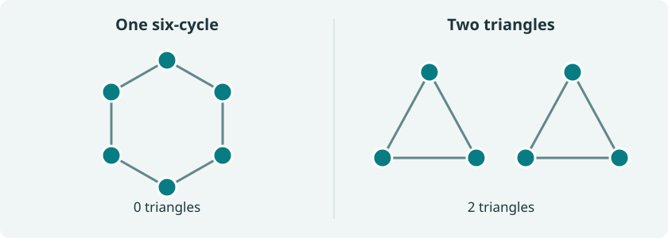

A molecule does not change when we renumber its atoms. A network predicting a molecular property should therefore ignore this numbering. Building invariance into an architecture is natural—but it raises a second question: does the architecture forget only the numbering, or does it also erase distinctions that matter?
Graph neural networks make this distinction particularly clear. Ordinary message passing cannot distinguish certain nonisomorphic graphs, however wide or deep the network becomes. Yet, with sufficiently flexible nonlinearities, it can approximate every continuous function that respects these additional identifications. This is a form of relative universality: universality relative to the information the architecture retains.
There are two separate tasks. Separation identifies the pairs of inputs that every network confuses. Approximation asks whether the networks can express every continuous function of the distinctions that remain. The bridge is surprisingly simple: concatenate features, then apply a nonlinear readout. Waïss Azizian and Marc Lelarge formalized this mechanism for invariant and equivariant networks [4]; Geerts and Reutter developed a broader account for GNNs [5]. Let us work through a concrete version, including the proofs.
The kernel: what the whole family cannot see
Let \(\Omega\) be a compact metric space of inputs, and let \(\mathcal F\subset C(\Omega,\mathbb R)\) be a family of continuous scalar models. For a map \(f\), define its fiber relation by
\[ \ker(f)=\{(x,y):f(x)=f(y)\}. \]The common kernel of the family is
\[ \operatorname{Ker}(\mathcal F) =\bigcap_{f\in\mathcal F}\ker(f). \]This is an equivalence relation, not a linear nullspace or a reproducing kernel. Two inputs are equivalent precisely when no choice of network parameters or allowed architecture distinguishes them. A smaller kernel means more separation power.
For any equivalence relation \(R\) on \(\Omega\), write
\[ \mathcal H_R =\{g\in C(\Omega,\mathbb R):(x,y)\in R\Rightarrow g(x)=g(y)\}. \]Every uniform limit of models is constant on their common fibers. Thus, with closure taken in the uniform norm,
\[ \overline{\mathcal F}\subseteq\mathcal H_{\operatorname{Ker}(\mathcal F)}. \]This is already an approximation obstruction: if all networks agree at \(x\) and \(y\), then every \(f\in\mathcal F\) satisfies
\[ \|g-f\|_\infty\ge\tfrac12|g(x)-g(y)|. \]But the reverse inclusion is not automatic. Affine functions on \([0,1]\) distinguish every pair of points, while they cannot uniformly approximate \(x^2\). Knowing all distinctions is not the same as being able to combine them nonlinearly.
Proof: the affine approximation error is exactly 1/8
For \(e(x)=x^2-(ax+b)\), the second difference gives
\[ \tfrac12=e(0)-2e(1/2)+e(1)\le4\|e\|_\infty. \]The affine map \(x\mapsto x-1/8\) attains the bound. Thus the common kernel is the diagonal, but the approximation error remains \(1/8\). \(\square\)
Graphs with marks, and the invariance we want
Fix a maximum number of vertices \(N\) and a nonempty compact set of marks \(K\subset\mathbb R^p\). An input graph \(G=(A,X)\) with \(n\le N\) vertices consists of a symmetric adjacency matrix \(A\in\{0,1\}^{n\times n}\) with zero diagonal, and a matrix \(X\in K^n\) whose rows \(x_i\) are vertex features. These could encode atom types or continuous measurements. Edges here are unweighted; we do not add vertex identifiers.
Let \(\mathcal A_n\) be the finite set of these adjacency matrices. Our input space is
\[ \Omega_N=\bigsqcup_{n=1}^N(\mathcal A_n\times K^n). \]Use the discrete topology for adjacency matrices, the usual topology for marks, and the disjoint-union topology across graph sizes. This is compact. Continuity means continuity in the marks on each fixed graph; this post makes no claim about uniform approximation over graphs of unbounded size.
A scalar graph function should be permutation invariant:
\[ f(PAP^\top,PX)=f(A,X) \]for every permutation matrix \(P\). A vertex-valued map should instead be equivariant: relabeling the input relabels its output rows. These are symmetry requirements, not yet definitions of a particular neural architecture.
A precise convolutional GNN family
We use a sum-message-passing network, a simple convolutional GNN in the framework of Gilmer and coauthors [1]. Start with \(h_i^0=x_i\), then repeat, for \(\ell=0,\ldots,L-1\),
\[ s_i^\ell=\sum_{j=1}^n A_{ij}V_\ell(h_j^\ell), \qquad h_i^{\ell+1}=U_\ell(h_i^\ell,s_i^\ell). \]The same maps are used at every vertex. The sum gathers messages from its neighbors; the update combines this neighborhood information with the vertex's own state. After \(L\) rounds, pool and read out:
\[ \phi(G)=\sum_{i=1}^n\rho(h_i^L)\in\mathbb R^q, \qquad f(G)=m(\phi(G)). \]Every \(U_\ell,V_\ell,\rho,m\) is a finite ReLU MLP with biases and a final affine output layer. Hidden widths, internal MLP depths, message dimensions, and \(q\) may vary. The scalar family with exactly \(L\) message-passing rounds is denoted \(\mathcal F_L\). Here \(L\) counts communication rounds, not all neural layers inside the MLPs.
All these functions are continuous. Relabeling merely permutes the states and the summation indices, so the states are equivariant and the final output is invariant. The last sum also recalls the invariant pooling in Deep Sets [7].
The flexibility of this definition matters. This is not a theorem about every architecture called a “GCN,” nor about a fixed width, mean aggregation, or a single affine graph convolution followed by ReLU. In particular, the degree-normalized architecture of Kipf and Welling [6] is a narrower family. The nonlinear message map, the separate self-state input, and sum pooling will make the proof work.
Color refinement describes the common kernel
The one-dimensional Weisfeiler–Leman procedure, or 1-WL, replaces neural states by exact symbolic descriptions. Its initial color is the mark. At each round, a vertex remembers its old color and the multiset of its neighbors' colors:
\[ c_i^0(G)=x_i, \qquad c_i^{\ell+1}(G)= \left(c_i^\ell(G),\;\{\!\{c_j^\ell(G):A_{ij}=1\}\!\}\right). \]The double braces denote a multiset: order is forgotten, but multiplicities are retained. The graph-level descriptor is the multiset of all vertex colors,
\[ c_L(G)=\{\!\{c_i^L(G):1\le i\le n\}\!\}. \]Compare these descriptors with a shared color convention across graphs—for example, keep the formal tuples above, rather than assigning unrelated color numbers in separate runs. Colors are symbolic objects, not a claim that a discrete hash is continuous in real-valued marks. We use “1-WL” specifically for this vertex color-refinement procedure; indexing conventions for higher-order WL variants differ across papers.
Theorem 1 (the separation power of sum-message passing). On \(\Omega_N\), for every fixed \(L\ge0\),
\[ \operatorname{Ker}(\mathcal F_L)=\ker(c_L). \]In words: two marked graphs have the same \(L\)-round color histogram if and only if every network in \(\mathcal F_L\) gives them the same output. The connection between message passing and WL was established by Xu and coauthors and by Morris and coauthors [2], [3]. Here is a direct proof for the exact architecture and compact marked-graph space above.
Proof of Theorem 1: propagate colors, then encode a finite set
Networks cannot distinguish more than colors. Fix any network. Equal initial colors give equal initial states. Inductively, equal next colors mean equal self-states and the same multiset of neighbor states, hence equal message sums and equal updated states. Equal graph color histograms therefore give equal pooled features and outputs. This proves \(\ker(c_L)\subseteq\operatorname{Ker}(\mathcal F_L)\).
Every color distinction can be realized by some network. Fix just two graphs \(G,H\) with different descriptors. Only finitely many marks and colors occur in this pair. The following elementary fact lets us encode them exactly.
Lemma 2 (finite ReLU interpolation). Given distinct points \(z_1,\ldots,z_r\in\mathbb R^a\) and arbitrary values \(y_1,\ldots,y_r\in\mathbb R^b\), a ReLU MLP can satisfy \(M(z_j)=y_j\) for every \(j\).
Proof of Lemma 2: project to a line and interpolate
Choose \(v\) outside the finitely many hyperplanes \(\langle v,z_i-z_j\rangle=0\). The numbers \(t_j=\langle v,z_j\rangle\) are distinct. A vector-valued piecewise affine curve through \((t_j,y_j)\) has the form
\[ q(t)=a+bt+\sum_k d_k(t-\tau_k)_+. \]Thus \(M(z)=q(\langle v,z\rangle)\) is a ReLU MLP; its affine term is representable using \(t=t_+-(-t)_+\). The case \(r=1\) is constant interpolation. \(\square\)
Use \(V_0\) to send the finitely many distinct initial marks in \(G,H\) to different standard basis vectors. Then \(s_i^0\) is an exact histogram of neighbor colors. The distinct pairs \((h_i^0,s_i^0)\) correspond exactly to distinct next colors, so Lemma 2 supplies an update \(U_0\) encoding these by new basis vectors.
Repeat: once states are basis vectors encoding colors, take the message map to be the identity, sum the resulting histograms, and interpolate the update on the finitely many encountered pairs. After \(L\) rounds, choose \(\rho\) to be the identity; sum pooling gives the final color histogram. A linear readout selects a coordinate where the two histograms differ. For \(L=0\), put the initial finite encoding in \(\rho\) instead. This constructs an \(f\in\mathcal F_L\) separating \(G,H\), proving the other inclusion. \(\square\)
The order of quantifiers is crucial: for each pair distinguished by WL, there exists a network separating it. We have not built one finite-dimensional continuous numerical hash of every possible color for every real-valued input. Pairwise separation is exactly what a common-kernel statement requires.
Invariance can hide more than a relabeling
Give every vertex the same mark. A six-cycle and two disjoint triangles both have six vertices, each with two neighbors of the same color. Every refinement round therefore keeps all six vertices identically colored in both graphs.

Consequently, every network above assigns the same scalar to these two inputs, at every depth. But the triangle count
\[ t(G)=\tfrac16\operatorname{tr}(A^3) \]is continuous on \(\Omega_N\), invariant under relabeling, and takes values \(0\) and \(2\). For \(N\ge6\), its uniform approximation error by these GNNs is at least \(1\). More neurons, a more powerful final MLP, or more message-passing rounds cannot recover a distinction already lost by this architecture.
Depth does refine the kernel on other graphs. Define stable WL equivalence to mean equality of the graph color histograms at every round. On graphs of size at most \(N\), it suffices to compare at round \(2N\):
\[ G\sim_{\mathrm{WL}}H \quad\Longleftrightarrow\quad c_{2N}(G)=c_{2N}(H). \]Why a bounded number of rounds suffices
Run refinement jointly on the disjoint union of the two graphs, with at most \(2N\) vertices. Each strict refinement increases the number of color classes. After at most \(2N-1\) such increases, the partition stabilizes. Once a round makes no further split, vertices in each class have the same neighbor-color counts, so no later round can split it either.
If the graph histograms agree at round \(2N\), they agree at earlier rounds because every new color retains its predecessor. At this stage the joint partition is stable, so agreement also persists at all later rounds. Literal tuple labels keep growing; it is their equality partition that stabilizes. \(\square\)
Stone–Weierstrass, without separating every input
We now turn from separation to approximation. The usual real Stone–Weierstrass theorem makes an algebra dense in all continuous functions when it contains constants and separates points [8]. What if some points are deliberately—or inevitably—identified?

Theorem 3 (relative Stone–Weierstrass). Let \(\mathcal F\subset C(\Omega,\mathbb R)\), with \(\Omega\) compact metric. If its uniform closure is a unital algebra, then
\[ \overline{\mathcal F}=\mathcal H_{\operatorname{Ker}(\mathcal F)}. \]“Unital algebra” means containing constants and being stable under linear combinations and pointwise products. Only the closure needs these properties, as in the earlier post on Stone–Weierstrass and universal approximation. Non-point-separating versions of the theorem are developed by Timofte [9] and used in the neural-network results of [4], [5].
Proof of Theorem 3: apply the usual theorem to what the family sees
Collect all model outputs in the evaluation map
\[ E:\Omega\longrightarrow\mathbb R^{\mathcal F}, \qquad E(x)=(f(x))_{f\in\mathcal F}. \]The product topology makes \(E\) continuous. Its image \(Z=E(\Omega)\) is compact Hausdorff, and \(\ker(E)=\operatorname{Ker}(\mathcal F)\). A continuous \(g\) constant on these fibers factors as \(g=\widetilde g\circ E\), with \(\widetilde g\) continuous: the continuous surjection from compact \(\Omega\) onto Hausdorff \(Z\) is a quotient map.
On \(Z\), coordinate functions separate points. The ordinary Stone–Weierstrass theorem approximates \(\widetilde g\) by polynomials in finitely many coordinates. Pulling back, it approximates \(g\) by expressions \(P(f_1,\ldots,f_r)\). Every such expression belongs to the closed unital algebra \(\overline{\mathcal F}\), so \(g\) belongs to it too. The opposite inclusion follows from constancy on common fibers. \(\square\)
This proof does not require a finite-dimensional sufficient statistic, or continuity of a chosen symbolic coloring. The compact space \(Z\) is the space of distinctions themselves.
The mechanism: concatenate features, then use an MLP
Let \(\Phi\) be a nonempty family of continuous feature maps \(\phi:\Omega\to\mathbb R^{d_\phi}\), where the finite dimension \(d_\phi\) can vary. Define
\[ \mathcal F_\Phi=\{m\circ\phi:\phi\in\Phi,\ m\text{ a scalar ReLU MLP}\}. \]Assume that whenever \(\phi,\psi\in\Phi\), the joint feature map \(x\mapsto(\phi(x),\psi(x))\) also belongs to \(\Phi\). This is stability under concatenation: two feature extractors can be run side by side. There is no fixed bottleneck dimension.
Proposition 4 (parallel features and a universal readout). Under this assumption,
\[ \overline{\mathcal F_\Phi}=\mathcal H_{R_\Phi}, \qquad R_\Phi=\bigcap_{\phi\in\Phi}\ker(\phi). \]This is the scalar, compact-domain version of the mechanism in Azizian–Lelarge, Theorem 5 [4]. Here the architecture supplies concatenation; the MLP supplies nonlinear recombination.
Proof of Proposition 4: an approximate algebra
First, \(\operatorname{Ker}(\mathcal F_\Phi)=R_\Phi\). Equality of all features forces equality of every readout. Conversely, a differing coordinate of one feature map is detected by an affine readout, which is a ReLU MLP.
Constants belong to the family. Given \(f=m\circ\phi\) and \(g=n\circ\psi\), concatenate the features. Parallel MLP branches followed by a linear output give \(af+bg\) exactly. To approximate the product, use ordinary MLP universality on the compact joint feature range for the continuous map \((u,v)\mapsto m(u)n(v)\). This proves \(fg\in\overline{\mathcal F_\Phi}\).
A constructive multiplier, without invoking MLP universality
Since \(f,g\) are bounded, choose \(M\) with \(|f|,|g|\le M\). Approximate \(t^2\) on \([-2M,2M]\) by a piecewise affine function \(q\) within \(\delta\). Linear splines are exactly ReLU networks. Polarization gives
\[ p(u,v)=\tfrac14\bigl(q(u+v)-q(u-v)\bigr), \qquad |p(u,v)-uv|\le\delta/2 \]for \(|u|,|v|\le M\). Composing this small multiplier with the two readout branches stays within the class of finite ReLU MLPs. Let \(\delta\to0\).
Products of arbitrary elements of the closure also belong to the closure. Indeed, if \(f_k\to f\) and \(g_k\to g\) uniformly, then
\[ \|f_kg_k-fg\|_\infty \le\|f_k\|_\infty\|g_k-g\|_\infty +\|g\|_\infty\|f_k-f\|_\infty\longrightarrow0. \]Uniform convergence bounds \(\|f_k\|_\infty\); approximate each \(f_kg_k\) within \(1/k\) by a model. Thus the closure is a unital algebra, and Theorem 3 applies. \(\square\)
The essential distinction is now visible. A good feature family determines the kernel. A sufficiently flexible readout lets us use several of its distinctions together. Neither ingredient substitutes for the other.
Applying the mechanism to GNNs
Let \(\Phi_L\) be the graph encoders \(\phi(G)=\sum_i\rho(h_i^L)\) defined above. Two such encoders can run in parallel: concatenate their hidden states and messages, use blockwise updates, and concatenate the final vertex readouts. Sum pooling then returns exactly \((\phi(G),\psi(G))\). In the first round, both branches simply read the same initial mark \(x_i\). For \(L=0\), concatenating \(\rho\) is enough.
So \(\Phi_L\) is stable under concatenation. Theorem 1 identifies the common kernel, and Proposition 4 turns that identification into approximation:
Corollary 5 (relative universality of message-passing GNNs). For every fixed \(L\),
\[ \overline{\mathcal F_L} =\{g\in C(\Omega_N,\mathbb R):c_L(G)=c_L(H)\Rightarrow g(G)=g(H)\}. \]Equivalently, for every continuous target satisfying this fiber condition and every \(\varepsilon>0\), some network in \(\mathcal F_L\) approximates it uniformly over all \(G\in\Omega_N\) within \(\varepsilon\). This is stronger than a separate interpolating network for each pair of graphs: compactness and Stone–Weierstrass turn pairwise separation into one global approximant.
If \(\mathcal F=\bigcup_{L\ge0}\mathcal F_L\) allows arbitrary message-passing depth, then
\[ \overline{\mathcal F} =\{g\in C(\Omega_N,\mathbb R):G\sim_{\mathrm{WL}}H\Rightarrow g(G)=g(H)\}. \]Proof of the arbitrary-depth statement
Every depth respects stable WL equivalence, so its uniform closure is contained in the displayed target class. Conversely, \(\mathcal F_{2N}\subset\mathcal F\), and \(c_{2N}\) already determines that equivalence. The fixed-depth corollary supplies the reverse inclusion. If encoders of different depths need to be concatenated, pad the shorter one with \(U(h,s)=h\), an exact ReLU MLP with an affine output. \(\square\)
These are existence theorems, not guarantees about training, useful widths, sample complexity, or approximation rates. They also do not say that a fixed finite feature map suffices for every accuracy. The dimensions and parameters can depend on the target and the required precision.
Two questions to carry to the next architecture
For graph classification, permutation invariance is the symmetry we ask for. WL equivalence describes the extra identifications imposed by this particular message-passing family. Achieving universality for all continuous permutation-invariant graph functions requires changing the architecture's separation power, not merely enlarging its final readout. Higher-order tensor constructions provide such routes, including my work with Nicolas Keriven [10] and the work of Maron and coauthors [11].
The same method can guide the study of sets, signals, measures, and attention architectures. First characterize the common kernel: which inputs always look the same? Then exhibit a recombination mechanism: can features be concatenated and their outputs multiplied, at least approximately? Kernel analysis describes the available information. An approximate algebra turns it into a universality theorem.
References
- Justin Gilmer, Samuel S. Schoenholz, Patrick F. Riley, Oriol Vinyals, and George E. Dahl. Neural Message Passing for Quantum Chemistry. ICML, PMLR 70, 1263–1272, 2017.
- Keyulu Xu, Weihua Hu, Jure Leskovec, and Stefanie Jegelka. How Powerful are Graph Neural Networks? ICLR, 2019.
- Christopher Morris, Martin Ritzert, Matthias Fey, William L. Hamilton, Jan Eric Lenssen, Gaurav Rattan, and Martin Grohe. Weisfeiler and Leman Go Neural: Higher-Order Graph Neural Networks. AAAI 33(1), 4602–4609, 2019.
- Waïss Azizian and Marc Lelarge. Expressive Power of Invariant and Equivariant Graph Neural Networks. ICLR, 2021.
- Floris Geerts and Juan L. Reutter. Expressiveness and Approximation Properties of Graph Neural Networks. ICLR, 2022.
- Thomas N. Kipf and Max Welling. Semi-Supervised Classification with Graph Convolutional Networks. ICLR, 2017.
- Manzil Zaheer, Satwik Kottur, Siamak Ravanbakhsh, Barnabás Póczos, Ruslan Salakhutdinov, and Alexander J. Smola. Deep Sets. Advances in Neural Information Processing Systems 30, 2017.
- Marshall H. Stone. The Generalized Weierstrass Approximation Theorem. Mathematics Magazine 21, 167–184 and 237–254, 1948. Part I · Part II.
- Vlad Timofte. Stone–Weierstrass theorems revisited. Journal of Approximation Theory 136(1), 45–59, 2005.
- Nicolas Keriven and Gabriel Peyré. Universal Invariant and Equivariant Graph Neural Networks. Advances in Neural Information Processing Systems 32, 2019.
- Haggai Maron, Ethan Fetaya, Nimrod Segol, and Yaron Lipman. On the Universality of Invariant Networks. ICML, PMLR 97, 4363–4371, 2019.